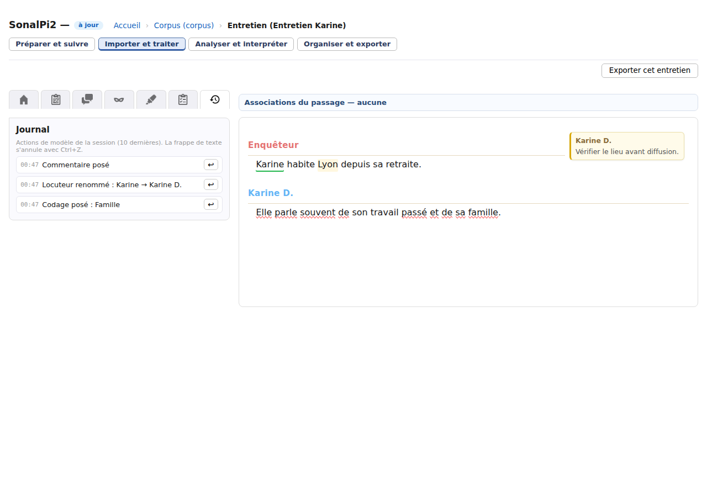

Importer et traiter
Revenir sur une modification
SonalPi enregistre automatiquement une grande partie du travail. Pour corriger une erreur, choisissez l’outil adapté : annuler une fenêtre avant validation, revenir sur la frappe dans la transcription, utiliser un Journal d’actions récentes ou rouvrir une copie de sauvegarde.
Le Journal n’est pas une sauvegarde. Il conserve seulement certaines actions récentes pendant la session. Pour pouvoir revenir à un état plus ancien après avoir fermé SonalPi, créez régulièrement une copie ZIP de votre corpus local.
Choisir la bonne manière de revenir en arrière
| Situation | Commande à utiliser |
|---|---|
| Une fenêtre est encore ouverte et vous n’avez pas validé. | Annuler, Fermer ou Échap, selon la fenêtre. |
| Vous venez de corriger les mots de la transcription. | Ctrl+Z ou Cmd+Z dans l’éditeur ; Ctrl+Maj+Z ou Cmd+Maj+Z pour rétablir. |
| Vous avez codé, commenté, renommé ou attribué un locuteur, ou modifié une valeur dans l’entretien. | L’onglet Journal de l’entretien, si l’action y figure encore. |
| Vous avez modifié une note depuis la vue corpus ou certaines informations de Personnes. | Aucune annulation n’est proposée au niveau du corpus : vérifiez avant de valider, ou repartez d’une copie de sauvegarde ZIP. |
| Vous voulez retrouver un état datant d’une session précédente. | Une copie de sauvegarde ZIP créée avant les modifications. |
Si une confirmation annonce qu’une opération ne peut pas être annulée depuis le Journal, utilisez Annuler dans cette confirmation pour renoncer, ou préparez d’abord une sauvegarde. Ne validez pas en comptant sur une flèche de retour qui n’est pas proposée.
Annuler une correction de la transcription
Cliquez dans la transcription, puis utilisez Ctrl+Z sous Windows et Linux, ou Cmd+Z sous macOS. La commande Édition → Annuler du menu produit le même effet lorsque l’éditeur est actif.
Pour réappliquer la correction annulée, utilisez Ctrl+Maj+Z, Cmd+Maj+Z ou Édition → Rétablir. Ces commandes suivent l’historique de l’éditeur : elles conviennent à la frappe, au collage, à une suppression de texte ou à un remplacement.
L’annulation devient elle-même le nouvel état de l’entretien et est enregistrée automatiquement. Attendez l’indication à jour avant de fermer l’application.
Le raccourci de l’éditeur suit l’ordre des modifications et ne permet pas de choisir une ligne précise. Pour viser explicitement un codage, un commentaire ou le nom précédent d’un locuteur, utilisez la flèche correspondante du Journal.
Utiliser le Journal de l’entretien
- Ouvrez l’entretien concerné.
- Dans les onglets de gauche, cliquez sur Journal, représenté par une horloge avec une flèche.
- Repérez l’action grâce à son heure et son libellé.
- Cliquez sur la flèche ↩ de cette action.
- Vérifiez le résultat dans la transcription ou le panneau concerné, puis attendez l’état à jour.

Le Journal peut notamment revenir sur :
- la pose ou le retrait d’un codage ;
- la création, la modification ou la suppression d’un commentaire ;
- l’attribution d’un locuteur à un passage et le renommage d’un locuteur ;
- la modification d’une valeur de variable pour l’entretien ou un locuteur.
L’action annulée disparaît du Journal. Le Journal ne propose pas de commande pour la rétablir ensuite ; vérifiez donc la ligne choisie avant de cliquer.
Comprendre les limites des Journaux
- Chaque Journal garde au maximum dix actions.
- Le Journal de l’entretien est vidé lorsque vous fermez cet entretien ou en ouvrez un autre.
- Une ligne grisée signifie que sa cible a disparu ou a changé : aucune annulation partielle n’est tentée.
- Une action absente du Journal n’est pas annulable par ce moyen.
La pseudonymisation du texte, l’ajout ou la suppression d’un locuteur, certains réglages de locuteur, les opérations globales sur les thèmes et les règles de pseudonymisation ne sont pas couverts par le Journal de l’entretien. Leurs dialogues indiquent les conséquences et les possibilités de reprise.
Fermer puis rouvrir ne fait pas réapparaître un Journal. L’enregistrement automatique conserve le résultat actuel, pas une suite de versions anciennes.
Créer une copie de sauvegarde ZIP
La copie ZIP est disponible pour un corpus local. Elle rassemble son contenu dans un fichier indépendant, utilisable même après avoir fermé SonalPi.
- Attendez si possible l’état à jour de l’entretien ouvert.
- Dans le menu de l’application, choisissez Corpus → Faire une copie de sauvegarde du corpus (ZIP)….
- Choisissez un emplacement distinct du dossier de travail et enregistrez l’archive.
- Conservez plusieurs sauvegardes datées dans un emplacement protégé.
SonalPi termine d’abord l’enregistrement de l’entretien ouvert, puis crée la copie. L’archive comprend les fichiers du corpus, ses entretiens, ses documents internes et les éléments conservés dans sa corbeille.
Les enregistrements audio ou vidéo référencés à l’extérieur du dossier ne sont pas copiés. Conservez-les séparément. Après un déplacement ou une restauration sur un autre poste, vous devrez peut-être les réassigner.
Pour un corpus distant, cette commande ZIP n’est pas disponible : la conservation principale dépend du serveur. Un export de transcription ou de corpus ne remplace pas une politique de sauvegarde.
Ouvrir une restauration dans un nouveau dossier
SonalPi ne possède pas de bouton qui remplace automatiquement votre corpus courant par une archive. La restauration consiste à décompresser la copie, puis à ouvrir le dossier obtenu comme un autre corpus local.
- Fermez l’entretien en cours et gardez le corpus d’origine intact.
- Dans votre gestionnaire de fichiers, créez un nouveau dossier vide.
- Décompressez le contenu du ZIP directement dans ce dossier. Le fichier corpus.crp doit se trouver à sa racine.
- Dans SonalPi, revenez à l’Accueil et choisissez Ouvrir un corpus local.
- Sélectionnez le dossier restauré, puis vérifiez les entretiens, les notes, les thèmes, les données et les documents attendus.
- Réassignez les médias externes si leur emplacement a changé.
N’extrayez pas la sauvegarde par-dessus le corpus actif. Ouvrez d’abord la restauration comme une copie séparée ; vous pourrez comparer les deux dossiers et choisir ensuite lequel conserver.
La restauration retrouve l’état présent au moment de la création du ZIP. Les modifications réalisées après cette date restent seulement dans le corpus de travail plus récent.